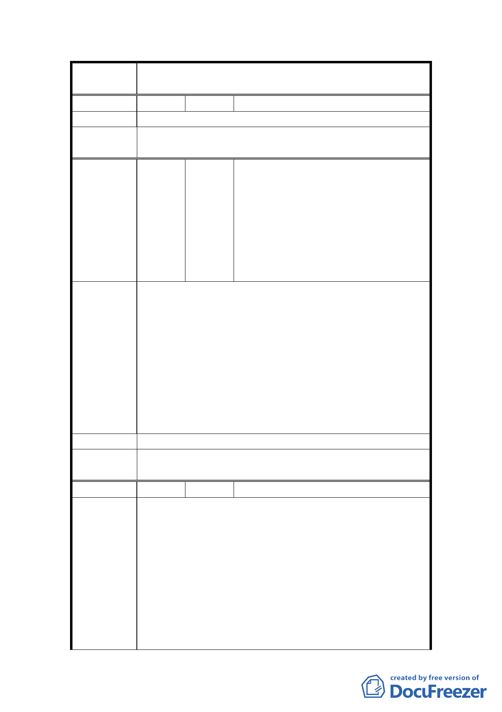

案
名
變更臺北市士林區三玉段一小段 22-3 地號等體育場用
地（天母運動公園）為臺北市立體育學用地主要計畫案
編 號 13 陳情人 諸莉珍
陳 情 理 由 絕不同意體專變更天母運動公園。
委員會決
議
同編號 1。
三玉里羅里長志傑、天福里江里長啟
南、天壽里蕭里長至明、天母里簡里
長文生、蘭興里趙里長鳳南、蘭雅里
編
號 14
陳情人
賴里長秋鴻、聖山里許里長榮村、天
山里黃里長世豐、天祿里莊里長千
甫、天和里莊里長福來、東山里郭里
長國億、芝山里魏里長雅郁、忠誠里
劉里長東麗等 7,339 人
1.市政府於 70 年 5 月 28 日都市計畫，徵用士林區三玉
段一小段 22-3 地號等 29 筆用地為公共設備用地即「天
母運動公園」供區民運動休憩之場所。
2.市政府於 85 年 4 月 12 日「85」府教一字第 85021960
陳情理由
號，因臺北體專改制為臺北體院之需，擇定天母運動
公園用地為體院校地，事屬違反土地分區使用規範，
漠視市民權益、剝奪居民運動空間，有違市府提倡健
康城市之精神。
3.我們肯定體院所有師生的努力與奉獻，培訓國家體育
選手之用地，乃校地規劃之百年大計。
建 議 辦 法 建議體院另覓校地
委員會決
議
同編號 1。
編 號 15 陳情人 江衍皇
1.反對臺北市政府違法變更天母運動公園為臺北市立體
育學院用地之都市計畫變更案。
2.臺北市政府罔顧現有市民已使用多年天母運動公園之
陳情理由
事實，為便於臺北市之體育學院用地遷移計畫，意圖
將整個公園變更為學校用地，剝奪現有民眾自由使用
之權力，罔顧政府花費巨額納稅人之錢（粗估 22.8
公頃，土地市值約 900 億），及福利市民都市計畫原
意，論法原被徵收善良無知地主，應有權請求返還自
有土地，而當地生活環境及交通惡化，天母地區房地
產所有人應有權向市府請求國賠。
15